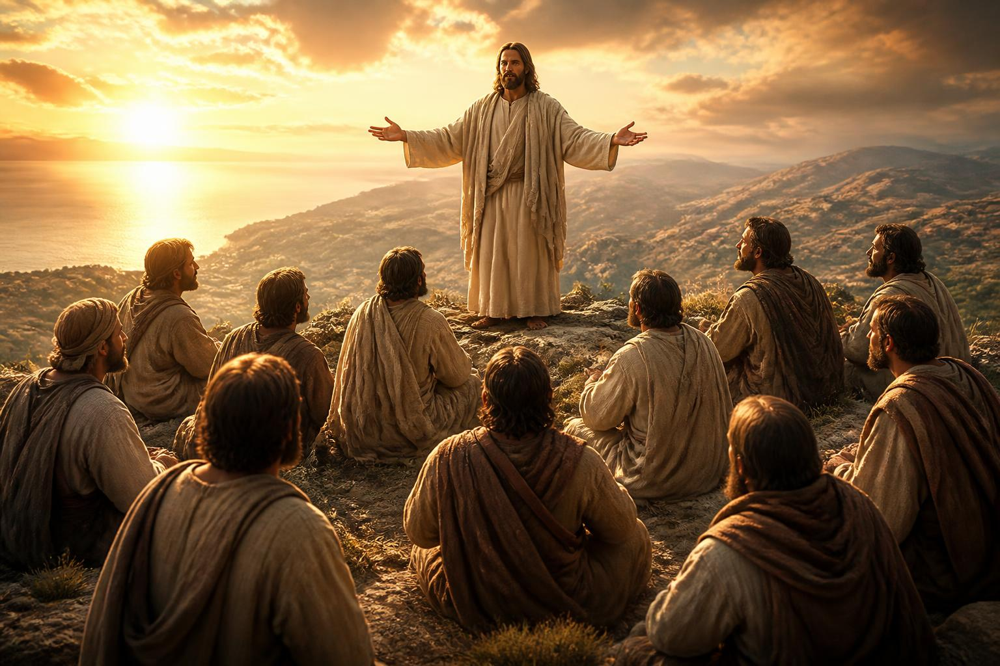
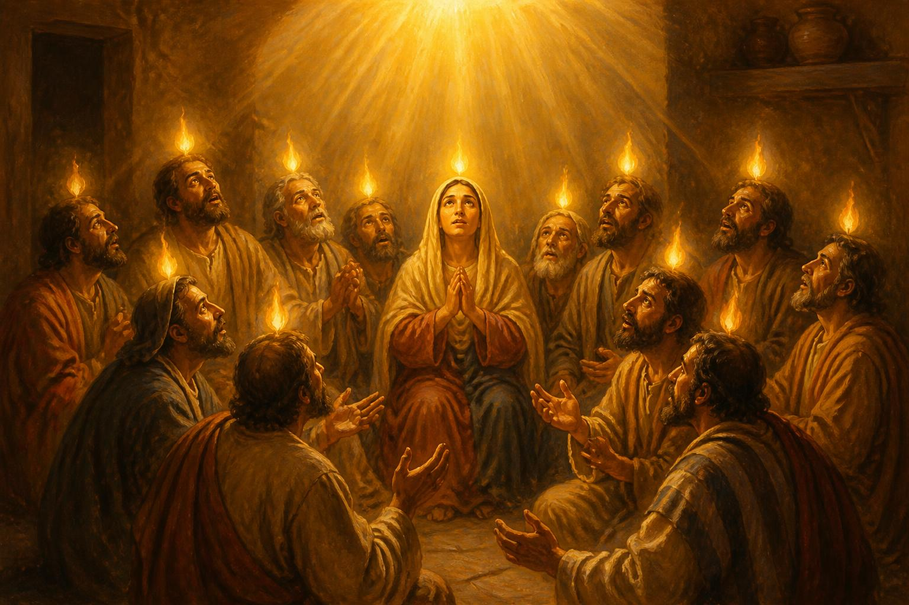
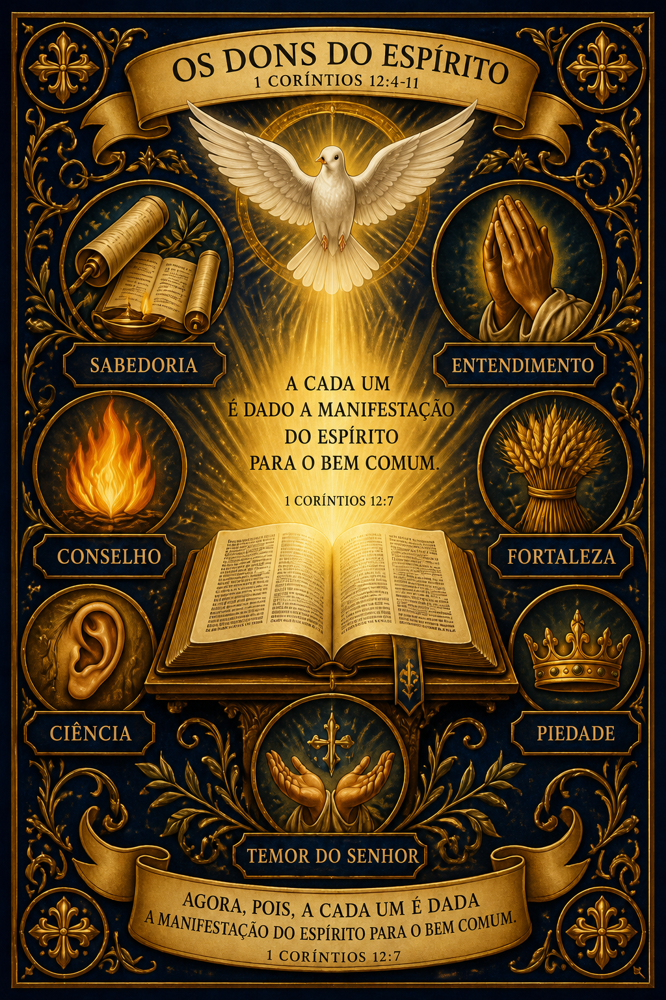

Uma jornada pelo poder do Espírito Santo na vida da Igreja — para Desbravadores que desejam servir com propósito.
No último encontro com Seus discípulos, o Mestre não entregou um manual nem um cargo. Entregou um chamado e a garantia de uma capacitação sobrenatural. A história do cristianismo começa exatamente aí: numa sala silenciosa, com pessoas comuns esperando por aquilo que mudaria o mundo. Esta especialidade é um convite para que você descubra que a mesma promessa continua viva hoje.
Pouco antes de Sua ascensão ao céu, Jesus reuniu os discípulos e confiou a eles a missão mais importante já entregue a um grupo de seres humanos: levar o evangelho a toda criatura. Não se tratava de uma sugestão, mas de uma ordem direta do Salvador ressuscitado.
A missão tem três dimensões inseparáveis: pregar as boas novas, batizar os que creem e ensinar tudo o que Ele ordenou. Para a Igreja Adventista do Sétimo Dia, esta comissão se amplia na Mensagem dos Três Anjos (Apocalipse 14:6-12) — proclamar o evangelho eterno em conexão com a hora do juízo e o breve retorno de Cristo.

Os discípulos eram pescadores, cobradores de impostos, gente comum. Como poderiam alcançar o mundo? Jesus respondeu antecipadamente: "Não vos ausenteis de Jerusalém, mas esperai a promessa do Pai". A força não viria da capacidade humana, mas do alto.
"Mas recebereis poder, ao descer sobre vós o Espírito Santo, e sereis minhas testemunhas tanto em Jerusalém como em toda a Judeia e Samaria, e até aos confins da terra." (Atos 1:8). Essa é a fórmula divina: oração + espera + Espírito Santo = testemunho transformador. Nenhum esforço humano substitui o derramamento do Espírito.
Entre a ascensão de Jesus e o Pentecostes, os discípulos passaram aproximadamente dez dias reunidos em oração e unidade no cenáculo (Atos 1:14). Ellen G. White destaca em "O Desejado de Todas as Nações" que foi essa união sincera, com confissão de pecados e súplica fervorosa, que preparou o coração deles para receber o poder do alto.

De repente, veio do céu um som como de um vento impetuoso. Línguas como de fogo pousaram sobre cada um dos cento e vinte reunidos no cenáculo. E todos começaram a falar em outras línguas, conforme o Espírito lhes concedia que falassem. A cidade de Jerusalém, cheia de peregrinos de toda parte do império, ouviu o evangelho cada um em seu próprio idioma.
Pedro, o mesmo que dias antes negara o Mestre por medo, levantou-se com ousadia e pregou o primeiro sermão da era cristã. O resultado foi imediato e arrebatador: cerca de três mil pessoas se converteram e foram batizadas naquele único dia (Atos 2:41).
A igreja recém-nascida passou a viver em comunhão diária — partindo o pão, perseverando na doutrina dos apóstolos, nas orações e na alegria. Tinham tudo em comum, vendiam suas propriedades para socorrer os necessitados, e o Senhor lhes acrescentava diariamente os que iam sendo salvos (Atos 2:42-47).
Esse foi o resultado imediato da atuação do Espírito Santo: coragem, unidade, generosidade, crescimento e poder no testemunho. O mesmo Espírito que transformou aqueles primeiros cristãos é o que a Igreja Adventista crê estar disponível hoje, na promessa da "chuva serôdia" — o último grande derramamento antes da volta de Cristo (Joel 2:23, Tiago 5:7).
"Vós, porém, sois raça eleita, sacerdócio real, nação santa, povo de propriedade exclusiva de Deus, a fim de proclamardes as virtudes daquele que vos chamou das trevas para a Sua maravilhosa luz."
Cada cristão, cada membro da igreja, é parte deste sacerdócio. Não há cristão sem ministério — todos somos chamados a proclamar as virtudes de Cristo onde quer que estejamos.

Os dons espirituais não são prêmios para os mais santos nem brinquedos para os mais espirituais. Eles são concedidos pelo Espírito Santo, segundo a Sua soberana vontade, a cada um dos membros da igreja, para o bem comum.
Paulo é direto: "A um, pelo Espírito, é dada a palavra da sabedoria; a outro, segundo o mesmo Espírito, a palavra do conhecimento; a outro, no mesmo Espírito, a fé; a outro, dons de curar... mas um só e o mesmo Espírito realiza todas estas coisas, distribuindo-as, como Lhe apraz, a cada um, individualmente" (v. 8-11).
Aplicação prática da verdade divina em situações concretas da vida.
Compreensão profunda das Escrituras e dos mistérios de Deus.
Confiança extraordinária em Deus, capaz de mover montanhas.
Capacidade dada por Deus para ministrar cura — física, emocional, espiritual.
Manifestações sobrenaturais que glorificam o nome do Senhor.
Falar a mensagem de Deus para edificação, exortação e consolo (1 Co 14:3).
Distinguir o que vem de Deus, do homem ou do inimigo.
Comunicar o evangelho em idiomas reais, como ocorreu no Pentecostes.
Traduzir a mensagem para que toda a igreja seja edificada.
Romanos 12 e Efésios 4 trazem mais dons: ensino, serviço, exortação, contribuição, liderança, misericórdia, apostolado, evangelismo, pastoreio. A lista bíblica não é exaustiva — é uma amostra do quanto Deus equipa Sua igreja. A Igreja Adventista entende o dom de profecia manifestado de modo especial no ministério de Ellen G. White como cumprimento de Apocalipse 12:17 e 19:10, e crê que todos os dons permanecem ativos até a volta de Cristo.
Os dons espirituais não existem para a vaidade de quem os recebe. Eles têm um alvo claríssimo, descrito por Paulo aos efésios: aperfeiçoar os santos, desempenhar o ministério e edificar o corpo de Cristo — até que todos cheguem à unidade da fé e à medida da estatura da plenitude de Cristo.
Preparar cada membro da igreja para o serviço cristão, amadurecendo o caráter à semelhança de Jesus.
Equipar para a obra — toda igreja é uma comunidade de servos, não uma plateia de espectadores.
Construir a igreja em amor, unidade e missão. Os dons complementam-se como membros de um corpo (1 Co 12:12-27).
Crescer juntos no conhecimento do Filho de Deus, até a "estatura da plenitude de Cristo" (Ef 4:13).
Toda manifestação dos dons tem como alvo final exaltar o nome do Senhor — não o do servo.
A resposta de Tiago é tão simples quanto profunda: "Se algum de vós necessita de sabedoria, peça-a a Deus, que a todos dá liberalmente e nada lhes impropera; e ser-lhe-á concedida. Peça-a, porém, com fé, em nada duvidando."
Consagre completamente sua vida a Cristo. O dom segue o doador.
Ore confiante, sem duvidar. Deus dá generosamente a todo coração disposto.
O Espírito Santo trabalha por meio da Palavra. Quem conhece as Escrituras é capacitado para servir.
Comece a servir já. Os dons se manifestam e crescem no exercício, não na espera passiva.
Os dons florescem no corpo. Comunhão com a igreja é solo fértil para o Espírito.
Continue pedindo, esperando, obedecendo. A chuva serôdia virá sobre quem clamar.
Um dos requisitos desta especialidade é compartilhar com um amigo como é possível receber os dons espirituais. Aqui vai um roteiro simples, baseado em Tiago 1:5-6, para você usar numa conversa natural — talvez no clube, na escola, ou em casa.
"Você já se sentiu sem saber o que fazer numa situação difícil? A Bíblia tem uma promessa incrível pra isso..."
Mostre o versículo. Explique que Deus oferece sabedoria — e dons — a todo aquele que pede com fé.
Compartilhe um momento em que Deus te ajudou. Testemunho vale mais que sermão.
"Vamos pedir juntos? Não precisa palavras bonitas — Deus quer só um coração sincero."
A festa de Pentecostes (Shavuot) acontecia 50 dias após a Páscoa e celebrava a entrega da Lei no Sinai. No Pentecostes cristão, Deus escreveu a Lei nos corações pelo Espírito, cumprindo Jeremias 31:33.
A Igreja Adventista declara em sua 17ª Crença Fundamental que "Deus concede a todos os membros de Sua igreja, em cada época, dons espirituais que cada um deve empregar em amoroso ministério para o bem comum".
Ellen White escreveu: "O Espírito Santo é o mais alto de todos os dons que Ele pôde solicitar do Pai para o engrandecimento de Seu povo. O Espírito deve ser dado como agente regenerador." (O Desejado de Todas as Nações, p. 671)
A Bíblia compara a obra do Espírito à chuva temporã (Pentecostes) e à chuva serôdia (antes da volta de Jesus). Os adventistas oram pelo derramamento final do Espírito que prepará o povo de Deus para o tempo do fim.
Paulo compara a igreja a um corpo: olho, mão, pé — todos diferentes, todos necessários (1 Co 12:14-27). Sua personalidade, sua história e seus talentos têm lugar único na missão.
(1) Glorifica a Cristo; (2) está em harmonia com a Bíblia; (3) edifica a igreja; (4) produz frutos do Espírito — amor, alegria, paz... (Gl 5:22). Onde falta amor, falta o Espírito (1 Co 13).